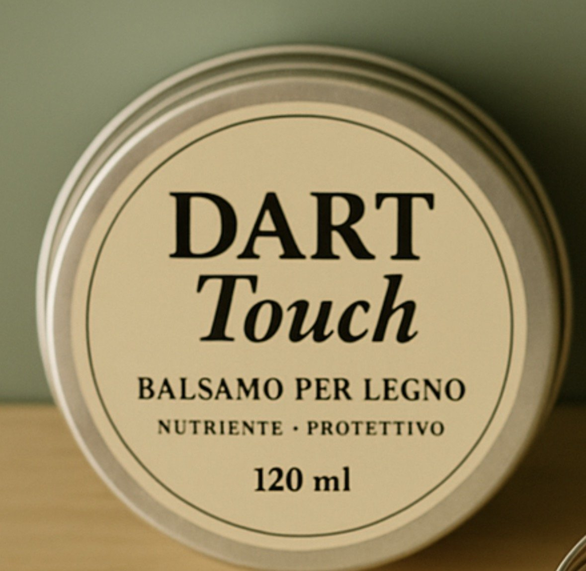

Nutriente
Penetra nelle fibre e restituisce al legno secco elasticità e profondità di colore.
DART Touch è il balsamo nutriente e protettivo che usiamo in laboratorio per finire i mobili che restauriamo. Ora puoi usarlo anche a casa, per dare nuova vita a tavoli, cassettiere e oggetti in legno.

Ogni mobile che passa dal nostro laboratorio, alla fine, riceve lo stesso gesto: una mano di balsamo, lasciata assorbire e poi lucidata a panno. È il momento in cui il legno torna caldo, profondo, vivo.
DART Touch è quel balsamo, in un barattolo di latta da tenere a portata di mano. Per mantenere belli i pezzi che hai già e per prenderti cura di quelli che porterai a casa.
“Un mobile restaurato dura una vita, se gli dai un po' di attenzione ogni tanto.”
Penetra nelle fibre e restituisce al legno secco elasticità e profondità di colore.
Lascia un velo che respinge polvere e umidità e attenua i segni dell'uso quotidiano.
Un panno morbido e qualche minuto: nessun attrezzo, nessun odore forte di solventi.
Togli la polvere con un panno asciutto. Il legno deve essere pulito e ben asciutto.
Preleva poco balsamo con un panno di cotone e stendilo seguendo la venatura, in strato sottile.
Lascia assorbire 10–15 minuti, poi lucida con un panno pulito fino a ottenere una finitura satinata.
Consiglio: per i mobili d'uso quotidiano ripeti ogni 3–6 mesi. Prova sempre prima su una piccola zona nascosta.
Ideale su legno grezzo, cerato o trattato a olio. Non adatto a superfici verniciate lucide o laccate.
Nutriente · Protettivo
Prezzo finale. Spedizione in tutta Italia o ritiro gratuito in negozio a Trieste.
Sì, su pitture acriliche e a gesso ben asciutte crea un velo protettivo e ravviva i colori. È lo stesso trattamento che riserviamo ai pezzi dipinti in laboratorio.
Sì, nutre il legno e lo protegge dall'acqua. Lascia assorbire bene e lucida a fondo prima dell'uso.
Si usa in strato sottile: con 120 ml tratti un tavolo e diversi mobili, e il barattolo dura per molti mesi di manutenzione.
Sì, nel nostro negozio di Via Luigi Cadorna 13 a Trieste, insieme ai mobili restaurati e ai quadri originali.
Hai 14 giorni dalla consegna per il recesso, se il barattolo è integro e non aperto. Trovi tutti i dettagli nella pagina Resi e rimborsi.
DART restaura mobili d'epoca e li dipinge a mano, uno per uno, a Trieste. Vieni a trovarci per vedere i pezzi e chiedere consigli sul trattamento del legno.
Via Luigi Cadorna 13
34123 Trieste (TS)
Martedì – venerdì 10–13, 16–19
Sabato 10–13